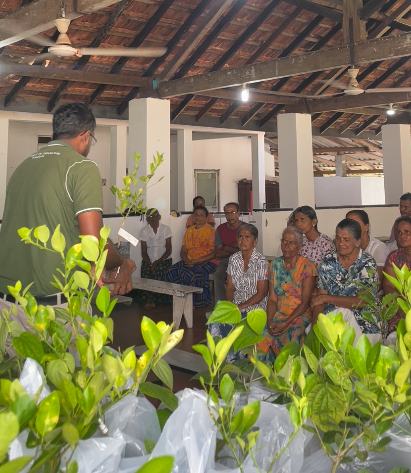
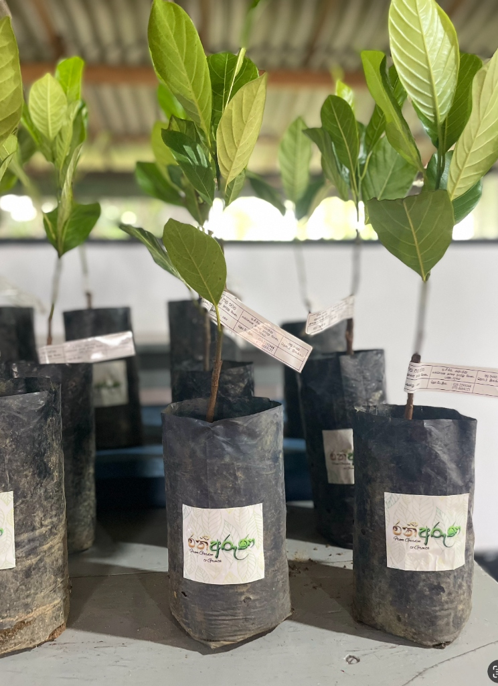
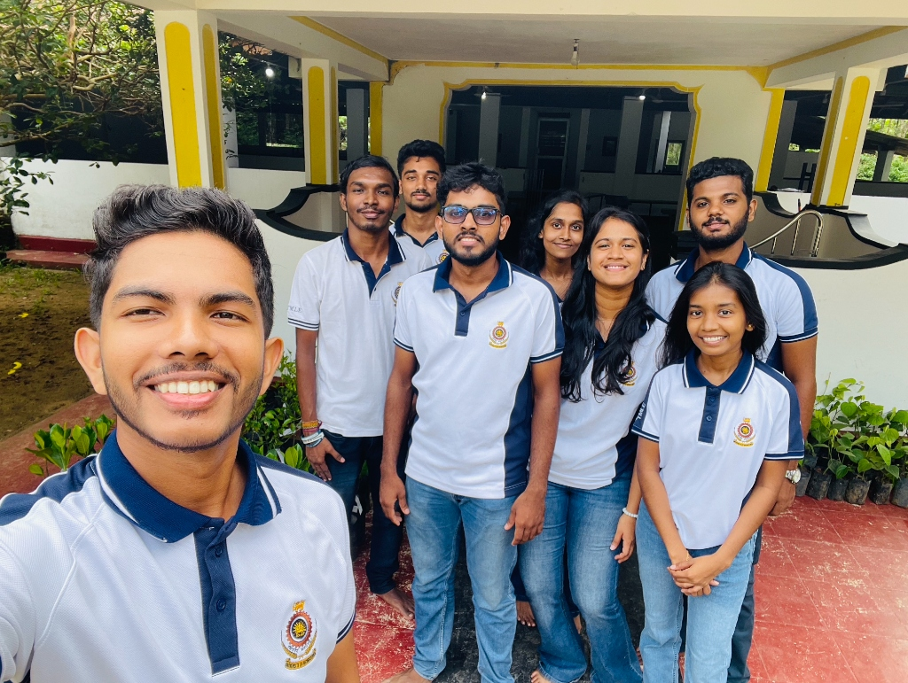

From Garden to Growth: Leading a Grassroots Change in Rural Sri Lanka
We all feel the pinch of rising food prices, but for economically vulnerable rural families, that pinch is a crushing weight. While agriculture is the backbone of Sri Lanka’s rural economy, a frustrating paradox exists: the very people who have the physical space to grow their own food often lack the starter capital, quality seeds, and technical knowledge to actually do it.
That’s exactly where Project Ran Aruna was born.
Stepping into the role of project leader for Group 09, this initiative meant more to us than just checking a box for our degree program at the University of Moratuwa. When we were tasked with selecting our community development project, the mandate was clear: it had to be unique and timely. Given the current economic climate, we knew we couldn't just offer a temporary handout. We wanted to build a sustainable system that provided immediate food access, reduced monthly grocery bills, and eventually generated surplus income. Here is the story of how we turned a modest budget of Rs. 25,000 into a lifelong investment for 20 families.



The Vision: More Than Just Planting Seeds
Our mission was ambitious: equip low-income families, unemployed individuals, and capable elderly community members with the exact tools they needed to build thriving home gardens. But giving away plants isn't enough. Without the right knowledge, gardens wither.
So, we designed a two-part solution:
- The Starter Kits: High-yielding plants and seeds, including Jackfruit, Lime, Passion fruit, Pepper, Guava, Chilli, Lady’s fingers, and Winged Bean.
- The Knowledge Hub: A comprehensive, hands-on workshop covering sustainable agriculture practices and basic entrepreneurship.
Hitting the Ground in Bandaragama
On October 17th, after weeks of preparation, logistics planning, and fundraising through raffle tickets and local sponsorships, our team arrived at the Sri Sheilathalaramaya Temple in Bandaragama.
The energy was incredible. We had our trucks loaded with carefully labeled plants and bags of seeds. As the families arrived, we kicked off our workshop with an expert resource person from the Agrarian Centre Bandaragama. They broke down exactly how to manage these crops effectively, shifting the mindset from simply "growing vegetables" to "managing a small-scale agribusiness."
Real-World Curveballs
No community project goes exactly as planned on paper, and leading this initiative definitely tested our adaptability on the ground.
Our absolute major challenge hit us right on the supply side. We had originally built our proposal around providing high-value Coconut and Banana plants, but sudden market shortages left us completely empty-handed on the coconut front. When you're managing a community project, you have to pivot rapidly. We quickly sourced high-quality Guava and Passion fruit instead to ensure the starter kits retained their maximum value for the beneficiaries.
Then came the turnout dilemma. We had a pre-registered list of 20 families. On the day, only 16 from the list showed up—but several unregistered, hopeful community members arrived as well. It was a critical leadership choice to make on the spot. We adapted by giving the full kits to the registered attendees, dividing extra loose plants among the unregistered guests so no one left empty-handed, and entrusting the remaining full kits to the temple's Thero to distribute to the absent families later.
The Harvest to Come
By the end of the day, we successfully distributed the kits and completed the training while balancing our budget down to the last rupee.
But the true success of Project Ran Aruna isn't measured by what we handed out that day; it’s measured by what happens next. We project that over 80% of these families will establish functioning home gardens. They left not just with planting bags and soil, but with the confidence to cultivate their own food security and financial independence.
Sometimes, changing a community doesn't require millions. It just requires a dedicated team, the right seeds, a bit of knowledge, and the willingness to get your hands dirty.